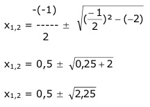
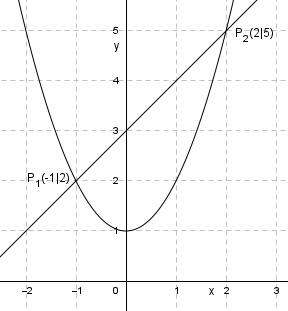

Aufgabe 17 In welchen Punkten schneiden sich die Parabel y = x2 + 1 und die Gerade y = x + 3? Rechnerische Lösung: Gleichsetzen: x2 + 1 = x + 3 |-x x2 - x + 1 = 3 |-3 x2 - x - 2 = 0 p,q – Formel: p = -1 ; q = -2  x1,2 = 0,5 ± 1,5 x1 = 0,5 - 1,5 = -1 y1 = -1 + 3 = 2 x2 = 0,5 + 1,5 = 2 y2 = 2 + 3 = 5 P1(-1|2) ; P2(2|5) Zeichnerische Lösung: 